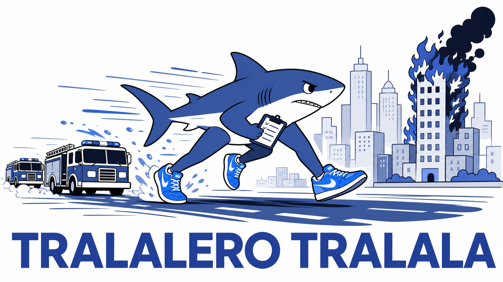

Stage 1: dispatcher

Yesterday you built the general agent loop and proved it on toy tools. Today you configure it into a dispatcher. Nothing about the loop changes: everything task-specific lives in dispatch.py and prompts/dispatch_system.md - the state message, the system prompt, the typed tools - and run_dispatch wires them into the loop you already wrote.
flowchart LR
subgraph Intake["Intake (Agents)"]
i1["'smoke near the<br/>school on 5th'"]
i2["'building fire on Elm St,<br/>people inside'"]
i3["'fire is out at<br/>the school now'"]
end
r{"Reconciliation (Code)<br/>match to known incidents"}
subgraph Incidents["Incidents (Memory)"]
n1["1: School, 5th Ave"]
n2["2: Elm St"]
end
subgraph Dispatch["Dispatch loop (Agent)"]
plan["plan"] --> act["act"]
act --> plan
end
subgraph Trucks["Fire trucks"]
t1["truck A"]
t2["truck B"]
end
i1 --> r
i2 --> r
i3 --> r
r -- "update" --> n1
r -- "new" --> n2
n1 --> plan
n2 --> plan
act <--> t1
act <--> t2
Now, we will build and test the dispatcher. Stage 1 hands you exact structured reports, one per incident, so we can skip intake and reconciliation.
TIP: If you want to see the exact data that your agent gets from the simulation, connect to it via Claude Code and play a Stage 1 level by hand. Ask your agent to describe the data going in and out.
What needs to be built
run_dispatch and _run_tool in dispatch.py are already working. You need to complete these four:
_state_message(incidents, trucks, tick)indispatch.py- the user message the model reasons over each tick. This is the one that decides your casualty count.prompts/dispatch_system.md- five TODO sections: what you control, the world is uncertain, priorities, committing vs holding, and the rules._finalizeinintake.py, at least the parts_project_claimneeds. The projection itself ships working: astructured_reportpayload becomes a report with no model call and zero tokens, but it exits through_finalize, so nothing reaches your stores until you write that gate.- The intake and reconcile holes in
runner._process_tick- build aReportper contact and, for this stage only, open one incident per report throughIncidentStore.open. Deterministic matching arrives in Stage 3.
The state message is the lesson
_state_message receives the live vehicle observations, each shaped {vehicle_id, status, position: {x, y}, incident_id, route: {eta_ticks, ...}, ...}. Three things:
- Coordinates are nested under
position, not flat top-levelx/y. routeisnullunless the truck is moving - a stationary vehicle has no route - so reaching straight forroute["eta_ticks"]dies on the first idle truck.incident_idis the incident of that truck’s most recent dispatch. Astatus=idletruck that put its fire out keeps the oldincident_idstill attached.
You should present the model with the data pre-structured and have it make just the dispatch decision.
Build a state message containing:
- each open incident, a. whether its COVERED or UNCOVERED (i.e. if a truck is assigned to it) b. order the incidents people-first, and
- each truck, whether it is FREE or committed,
- one line of instruction.
If your model sends both trucks to the same fire, this is typically a failure of the state message system. You can fix it by using a much more expensive model, or by improving your state message here.
Activity: Configure the dispatcher
Spoiler: stuck on Stage 1?
-
Write
_state_message. Pre-reconcile coverage and priority as above, and read truck coordinates fromposition. -
Fill
prompts/dispatch_system.md. The allocation rule under “Committing vs holding” is the key section that changes outcomes. A good place to start is “one free truck to the highest-priority uncovered incident, no more than one truck per incident.” -
Open the gate. Implement enough of
_finalizeto satisfyuv run behave features/intake.feature. Envelope authority is the rule being tested:contact_idandreported_locationare copied from the contact and never invented, and anoneclaim carries no severity or headcount - and note that INT-3 feeds you a claim that does carry both, so the gate has to strip them even though a machine sent them. -
Pin the enforcement.
uv run behave features/dispatch.featurerunsrun_dispatchend to end against a fake LLM.DISP-2checks that your code only dispatches trucks to incidents that exist. -
Run it live. Fill the two holes in
runner._process_tick, bring an engine up, and run a full episode:uv run https://dl.hadr.ocelliq.com/hadr-engine.py serve --port 8000 # in its own terminal uv run hadr-runner stage1-basic@londoneStart with
minimax-m3asDISPATCH_MODEL(the default). -
Tune.
run_dispatchhands aDispatchResultback to the runner every tick and nothing prints it, soprintitsroundsandplanwhile you work. HittingMAX_TOOL_ROUNDSor watching both trucks converge on one fire is a state-message problem, not a model problem. -
Checkpoint. Paste the skeleton progress checker prompt into Claude Code to verify the complete path and settle the travel-time and dispatch-budget choices.
When you’re done
- Open a pull request with the state message, the prompt, and the runner wiring, and have a teammate review it against a live run rather than against the test output.
behavegreen only means the scripted model was satisfied with a well-formed request; no fixture can tell you whether the state message you handed it makes the right fire come first. - Post your Stage 1 numbers on the Padlet: casualties and buildings lost on
stage1-basic@londone, plus the dispatch token total. Your teammates ran the same scenario on the same seed, so a wide spread means somebody’s state message is doing far more of the thinking than the others - find out whose, and why.